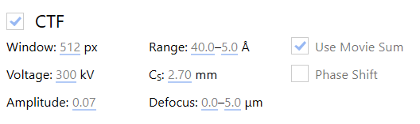

2D preprocessing
Contents
2D preprocessing#
In this section we will take you from the raw data we downloaded from EMPIAR (multi-frame micrographs) to tilt-series.
We will use Warp for the initial processing of the raw data. This will let us:
obtain an initial estimate for defocus and inter-frame motion
merge frames into single images according on the estimated motion
detect and mask gold fiducials for tomogram reconstruction
prepare the image stacks for tilt-series alignment in
Dynamo
Raw data preprocessing in Warp#
See also
The following tabs detail the parameter settings as appropriate for this application. If you seek additional information, check out the Warp User Guide.
To import new data into Warp, click on the path next to Input and select the frames directory. For the HIV-5-TS data, make sure that the selected format is *.mrc.
We then set the parameters as shown below.

We need to correctly set the pixel size to match that of the raw data; in this case, 0.6750 \(Å/px\).
For HIV-5-TS, the data were collected in super resolution mode, the physical pixel size is 1.35 \(Å/px\). Processing data without first downsampling may reduce the aliasing of high-frequency signals in the image but significantly increases the computational overhead. In this case we will use Warp to downsample the data by a factor of 2, in order to return to the physical pixel size of the detector. For now, the exposure can be left at zero. For tilt-series data, dose-dependent exposure weighting (dose-weighting) is dealt with at a later stage.
Attention
When processing other data, you may need to provide a gain reference here. Make sure that the orientation of the reference and the images correspond!
The EMPIAR entry for EMPIAR-10164 indicates that the images were already gain corrected. We can skip gain correction by leaving this section unchecked.
Accurate estimation of Contrast Transfer Function (CTF) parameters is essential for obtaining high resolution reconstructions.
{kind=link}
The following parameters depend entirely on the microscope setup used for data collection, for HIV-5-TS:
Voltage : The acceleration voltage used in the electron microscope
Cs : The spherical aberration of the electron microscope
Phase Shift : Whether to model a phase shift in the CTF, usually only used for data collected with a phase plate.
The remaining parameters should be set depending on the dataset:
Defocus : The upper and lower limits for defocus estimation. When a dataset is expected to have higher or lower defoci, this range should be expanded.
Use Movie Sum : Whether to use the movie sum for CTF parameter estimation. Activating this should lead to slightly better results for low-dose images.
Amplitude : The percentage of amplitude contrast for the CTF model. For cryo-EM typical values are 0.07-0.10.
Some computational parameters can also be adjusted:
Window : The size of power spectra used for CTF estimation.
Range : The range of spatial frequencies to use for fitting. At low frequencies, data often doesn’t match the CTF model. At high frequencies there is often not enough signal for accurate CTF estimation. In our experience, 40.0-5.0 is usually a good range for high magnification tilt-series images (1-3 \(Å/px\)) with ca. 3 \(e^-/Å^2/tilt\) image.
In order to compensate for both mechanical stage-drift and beam-induced sample motion, we estimate and correct for the inter-frame motion present in the image. In this case, we leave the motion correction parameters as defaults.
{kind=link}
Warp allows us to estimate how CTF and inter-frame translational motion parameters change in both space and time.

The resolution of this spatiotemporal model (x, y, t) can be set in the Models panel: the first two values represent the spatial resolution of the model in x and y , while the third value sets the temporal resolution (at most, the number of frames in a multi-frame micrograph).
For tilt-series data, a CTF model resolution of 2x2x1 is usually sufficient to observe how defocus changes across the image, which is required to determine the ‘tilt-handedness’ of the data. More accurate defocus values will be estimated in the tilt-series CTF estimation procedure prior to tomogram reconstruction.
A motion model of 1x1xn where n is the number of frames typically ensures that accurate estimates can be obtained from low-dose data. The alignment of individual frames can be improved once a high SNR reference has been obtained, this is performed in the multi-particle refinement step of the workflow.
For HIV-5-TS, EMPIAR indicates that we have 8 frames per image, so we set the resolution of the motion model to 1x1x8
While gold fiducials are useful for the accurate alignment of tilt series, their high contrast will have negative effects on the final tomographic reconstruction. For this reason, we use Warp to mask out any beads prior to tomographic reconstruction.
The Pick Particles panel gives access to BoxNet, a deep convolutional neural network designed to pick particles and mask out unwanted subregions in single-particle cryo-EM. A version of BoxNet that we retrained to mask gold fiducials is available here under the name GoldNet.
In order to access it from Warp, extract the GoldNet directory and place it in the Warp installation folder under the boxnet2models directory. Then, to select the pretrained model in Warp, click on the currently selected BoxNet model and select the GoldNet model.
{kind=link}
As we are only using this model for particle picking, the parameters relating to particle picking can be safely ignored.
{kind=link}
In the Output panel, we can choose not to include frames at the beginning and end of a movie. The first frames from a multi-frame micrograph of a given exposure often display increased translational motion. In this case, we chose to include all frames from the micrograph to maximise the signal present in the final images.
By selecting Average, we ensure the output of one 2D image per multi-frame micrograph in which the inter-frame motion has been corrected according to the motion model
Odd/even frame averages can be generated to facilitate Noise2Noise based denoising, this is not covered in this guide but we recommend playing with it.
Aligned stacks of frames can also be generated; this can be useful in single-particle analysis of frame series data to enable the use of RELION’s Bayesian polishing. In our case, we leave it blank.
We are now ready to press START PROCESSING. This will:
Estimate CTF and inter-frame motion parameters according to the spatiotemporal model
Generate one micrograph per tilt in which the motion has been corrected according to the motion model
Generate masks around gold fiducials in each image using the provided BoxNet model
Tip
During processing, you can check the results by switching to the Real Space and Fourier Space tabs at the top of the Warp interface. Explore these sections, checking that the CTF model matches the experimental curve, the defocus estimates appear to change as expected with tilt angle and that beads masks seem appropriate.
Deselect bad images#
Images in each tilt-series must be assembled into an IMOD stack in order to use Dynamo for the tilt-series alignment, but before doing so we should discard any bad images in our dataset. To do so, switch to the Real Space tab at the top and manually inspect all the tilt images.
To quickly check the images, hover your mouse over the selection bar at the bottom of the screen and move it along its length to inspect the thumbnails. To inspect an image in more detail, click on the bar and the image will be enlarged.
If an image is heavily contaminated, black, blurred, a grid bar blocks a significant part of it or you otherwise deem it unsuitable, deselect the image by clicking the checkbox next to its name. The bar should turn grey once an image is deselected.
For this dataset we only have to discard two bad images: TS_01_039 and TS_03_039.
{kind=link}
Stack generation#
To generate the image stack, we first have to put Warp into tomostar mode. We do this by clicking on the *.mrc extension on the top left, and selecting the *.tomostar extension.
Then, click on the (slightly misnamed) import tilt series from IMOD button at the top of the screen.
In the newly opened window, we should now select the Folder with original movies and the Folder with .mdoc files.
In this case, they are the frames and mdoc folders, respectively.
Click on Create stacks for IMOD to start exporting the data. We can immediately move on to the next step without having to wait for the stack generation to finish, thanks to autoalign_dynamo’s on-the-fly processing.
{kind=link}